SPFx Forums Hook GitHub Workflow
Video: https://youtu.be/QkizlUCVYSY
GitHub Repo: https://github.com/Ashot72/SPFx-Forums-Hook-GitHub-Workflow
GitHub Workflows (Actions) is a continues integration and continues delivery (CI/CD) platform that allows you to automate your build, test and deployment pipeline.
We are going to build our own GitHub action workflows for SPFx Forums Hook webpart that we have already built https://github.com/Ashot72/SPFx-Forums-Hook
We will test, build and generate Forums Hooks package which we can upload it manually, but we are going to automate even the package deployment to App Catalog.

Figure 1
There are basically three main blocks to understand when working with GitHub Actions. That would be Workflows, Jobs and Steps. We have a code repository on
GitHub and that is important because this is a GitHub feature and it is related to repositories on GitHub. We typically store some code in there.

Figure 2
The important thing is that workflows are attached to those GitHub repositories. You can add workflows to GitHub repositories and you can add as many workflows as you
want to a given repository. Such a workflow includes one or more jobs. That is the next important block, Jobs. So, we have workflows that belong to repositories and then it
those workflows we have jobs. Those jobs then contain one or more steps that will be executed in the order in which they are specified. These steps define the
actual things that will be done. For example, download the code in the first step, install the dependences in the second step, and run automates test in the
third step. That is what we can do with GitHub Actions and with such a workflow that contains a job with the appropriate steps. You can have as many
workflows as you want and as many jobs per workflow as you want and as many steps in a job as you want.

Figure 3
With GitHub actions we assign so called triggers or events to our workflows. These events define when a given workflow will be executed. For example,
you could add an event that requires manual activation of a workflow, but you could also add an event that triggers and executes a workflow
whenever a new commit is pushed to a certain branch.
Every job defines a so-called runner which is simply the execution environment, the machine and operating system that will be used for executing
the steps. With GitHub actions, these runners can either be runners that are predefined by GitHub. They offer runners for Linux, Mac OS, and Windows
but we can also configure our own runners. Jobs as we said define some steps that will be executed in the runner environment, on the machine
we specified. If we have multiple jobs, they run in parallel by default, but you can configure them to run in sequential order, so one job after another.
You can also set up conditional jobs which will not always run, but which instead need a certain condition to be met.
Steps belong to jobs, and a job can have one or more steps. A step is either a shell script a command in the command line that should be executed,
or an action, which is another important building block. Actions in the context of GitHub action are predefined scripts that perform a certain task
We can build our own actions if we need to or use third-party actions, but for simple tasks, we can also execute a command in the command line.
Steps are executed in order, they do not run in parallel, but instead step after step and they can also be conditional.

Figure 4
Actions in the repository are stored in a .github/workflows subfolder having yml or yaml extension.
This is where we should store our GitHub workflows so that GitHub is able to detect them.

Figure 5
We give an action a name, by specifying our workflow name. After it we should define when the workflow should be executed.
We do it by adding on key. The on key is just like name and after it we define the event or the events that should trigger the workflow to run.
GitHub actions define many events which we can listen. Here we defined push event and the event runs when you push a commit or tag.
We also specified develop branch and our workflow will run when we push to develop branch.

Figure 6
Let's take a closer look at workflow triggers and events and to be clear that is the same thing.
GitHub actions actually offers tons of events you can listen to. Most of them are repository related and there you got events like a push
happening or a pull_request being opened or maybe a new branch was created or a repository was forked or an issue was opened or detected.
There also are some other events. workflow_dispatch which allow us to manually trigger workflows. We also have repository_dispatch
which we allow us to send REST API request to a specific GitHub API to trigger a workflow. We can schedule a workflow by running every day at
8:00 AM for example. We also allow a workflow to be called by other workflows as something we will explore in our project.
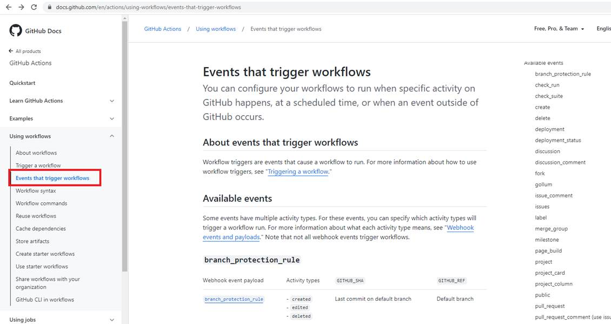
Figure 7
On https://docs.github.com/en/actions/using-workflows/events-that-trigger-workflows page you see all the events that can trigger a workflow and how exactly these events are triggered.

Figure 8
Here in the example of the pull_request event it shows which variations of that event can trigger a workflow. For pull_request case,
the workflow should be triggered when a new pull_request is opened or maybe when it is closed or any other variations.

Figure 9
Actions are another key building block or component of GitHub Actions. Action is simply a custom or third-party application
that performs a typically complex, frequently repeated task. For example, fetching the code from a GitHub repository, and
downloading it onto a runner machine. The alternative to such action is a command that's defined with help of the 'run'
keyword in your YAML file.

Figure 10
We have used run command in our workflow. With this 'run' command we simply execute typically simple shell commands
on that runner machine and these commands are written down by us. Actions on the other hand, are predefined applications,
which actually also can be distributed through a marketplace because you can build you own actions. You can also use official
or community actions.
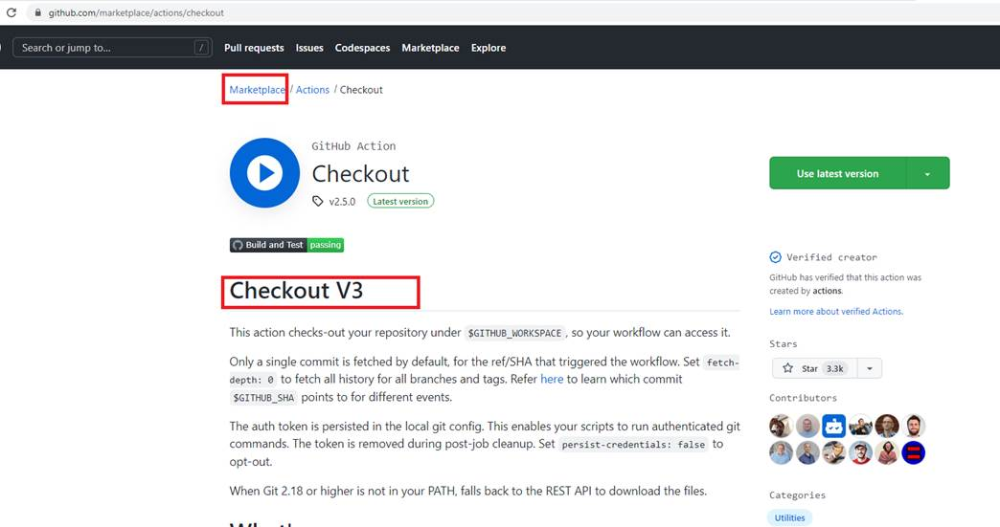
Figure 11
This is the official Checkout action which is created and maintained be the GitHub team. Marketplace actions do not cost money.
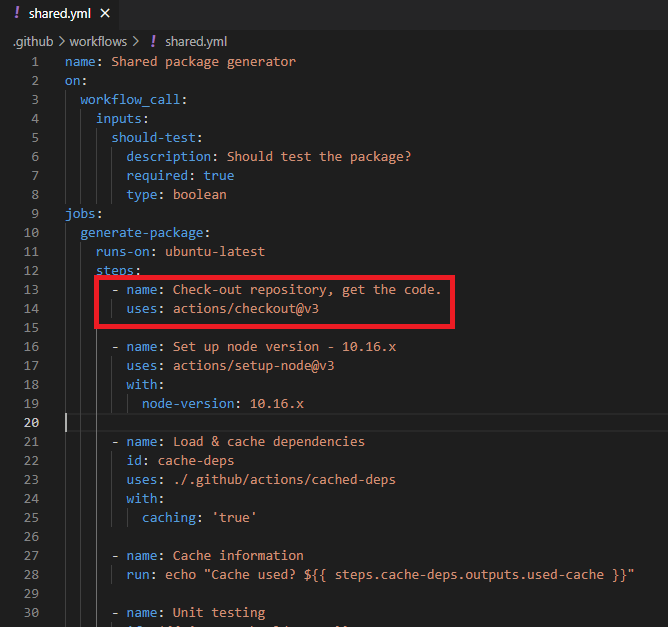
Figure 12
So here in our code we use checkout action. And with that, this is all we have to do for this action.
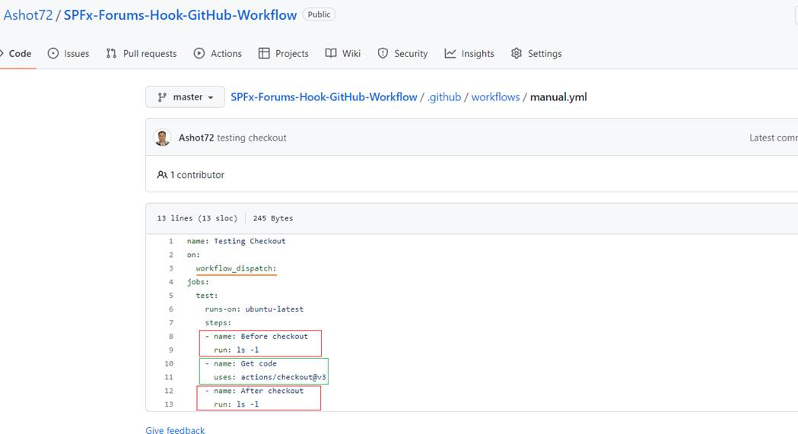
Figure 13
To see it in action I created a workflow where we run Linux ls (list files and directories) shell command before and after the checkout.
The event is workflow_dispatch to allow us to manually trigger workflows. You see we run it on Ubuntu runner which is the modern,
open-source operating system on Linux.

Figure 14
Here we run the workflow manually.
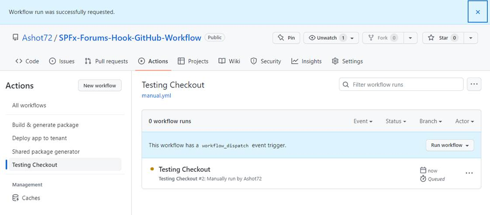
Figure 15
It is running.

Figure 16
You can see that before the checkout nothing on our ubuntu machine but after the checkout the repository code has been loaded.

Figure 17
This is our repository.

Figure 18
Here, we defined two jobs in the workflow.

Figure 19
You see these two jobs are running in parallel and release job has already been executed. Then run simultaneously.
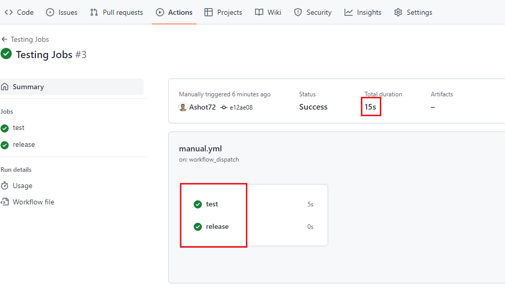
Figure 20
The total time duration in this case 15 second which is not the sum of the individual durations. This proves that they run in parallel.
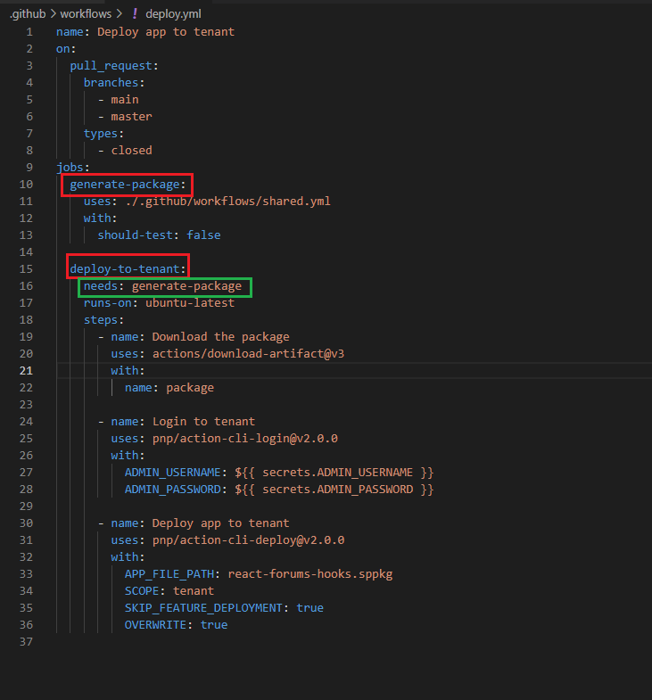
Figure 21
In our project for these generate-package and deploy to tenant jobs it makes sense to run them after each other
instead of in parallel. Because we probably only want to deploy to tenant if package has successfully been generated.
If we got a failing package generation we do not want to deploy. To run jobs after each other we just have to add one simple
keyword to the job and that is the needs keyword. With needs we can point to the identifier of another job that must be finish
before this job. In this case I add generate-package to clarify that deploy-to-tenant job needs the generate-package job to have
finished before the deployment. We could wrap needs in brackets to wait for multiple jobs to finish such as
needs: [job1, job2, job3]
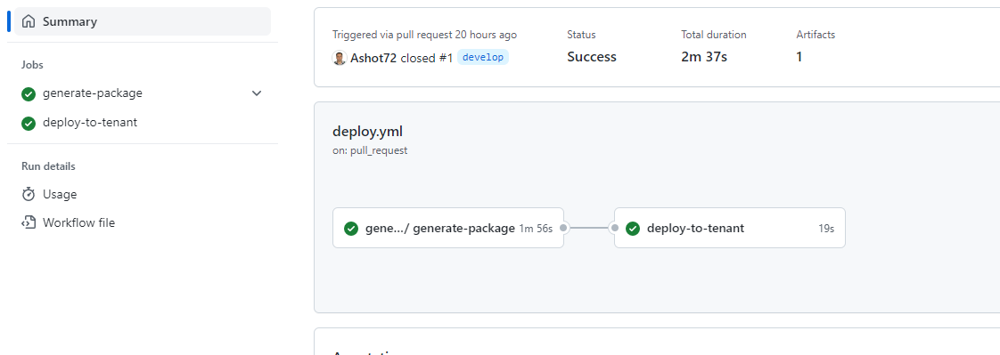
Figure 22
Here we can see that they run after each other which is also reflected visually here. We see that deploy will only start
after the package has been generated. Overall, this workflow will take longer because now the jobs do not run in parallel.
Sometimes we have some certain actions that needs some metadata from the environment, for example we could work
with environment variables something we will explore later.
Let's create a simple workflow.

Figure 23
We name it Output Information. We trigger this workflow manually with workflow_dispatch. We define one job naming it info
This job runs on ubuntu-latest. We want to output some information that is automatically passed into these jobs and steps.
This meta information is named context. GitHub actions creates some context data with various piece of information about
the event trigger, runner and other things that can be accessed inside of steps. In the first step we output GitHub context,
which is an object or a collection of data with some general information about the workflow and the event triggers.
We are outputting data we are getting from GitHub. That is github identifier. To access the dynamic value in the command
we use special syntax ${{ }}. In this case it is ${{ github }} key. To make it readable we wrap it in a function toJSON.
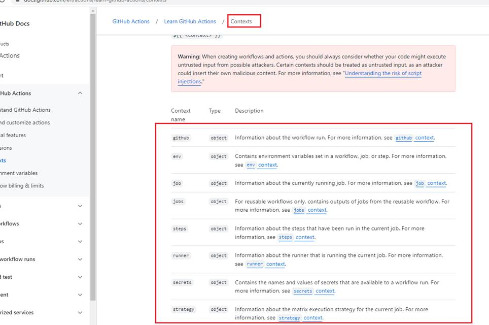
Figure 24
If we search for GitHub actions context https://docs.github.com/en/actions/learn-github-actions/contexts we see github object and other contexts that we are going to use in our workflows.
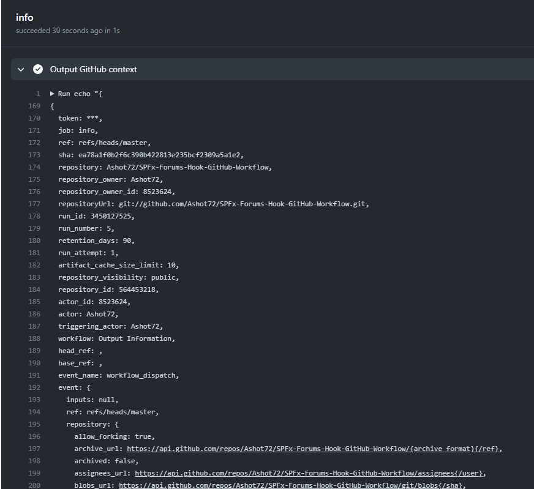
Figure 25
We see that these data here are all fetched from this GitHub object context.
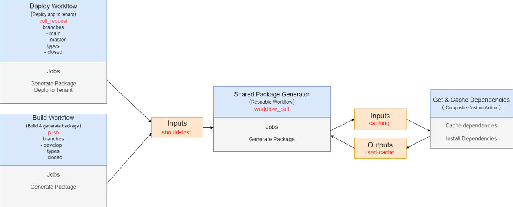
Figure 25
Before exploring the other features of GitHub actions, I would like do draw our workflow. We have two workflows. First one is Build Workflow (build.yml)
running on push event. The other one is Deploy Workflow running on pull_request event. They use reusable workflow shared.yml which in its turn uses a
custom action to cache and install dependencies.
In GitHub Actions Artifacts allow you to share data between jobs in a workflow and store once that workflow has completed.
An artifact is a file or collection of files produced during a workflow run. For example, you can use artifacts to save your build
and test output after a workflow run has ended. Storing artifacts uses storage space on GitHub.
Artifacts are uploaded during a workflow run and you can view an artifact's name and size in the UI. When an artifact is
downloaded using GitHub UI, all files that were individually uploaded as part of the artifact get zipped together into a
single file.
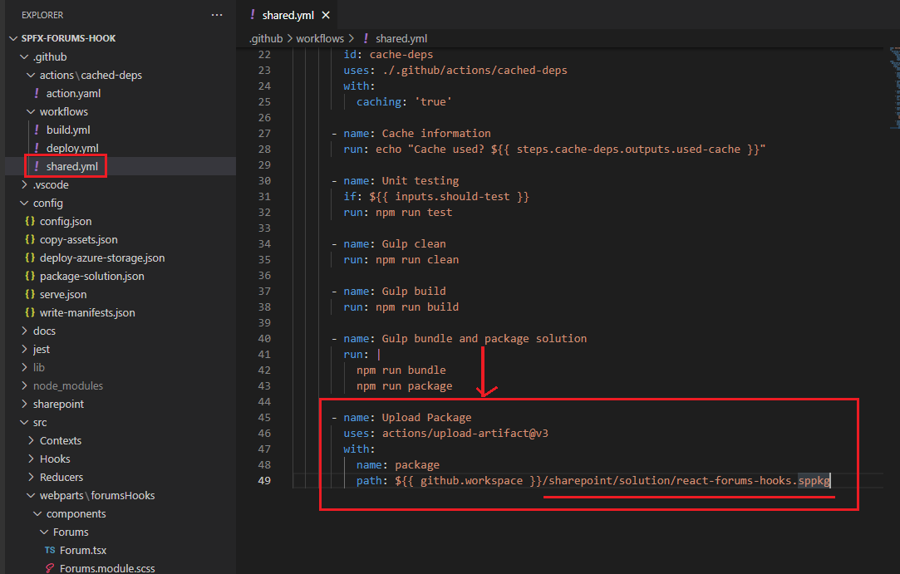
Figure 27
In our shared.yml file, in the reusable workflow you see that we generated our SPFx package in Gulp bundle and package solution step and uploaded it to
storage space. We name it package and also are specifying the path of the package in our runner. SPFx packages are generated in sharepoint/solution folder.

Figure 28
On the workflow page under the artifacts, you can see package That is the package we uploaded from the runner to storage space.

Figure 29
We can download the package to our machine by clicking the package.

Figure 30
We have our SPFx package there. There can be more than one file inside the zip file but in our case, we just need the SPFx package only.
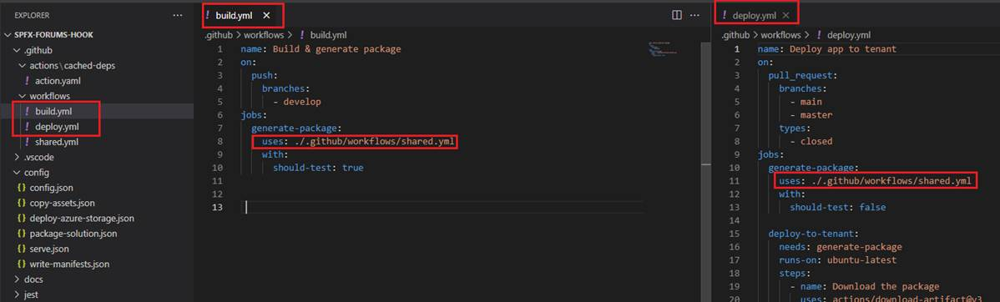
Figure 31
Both build and deploy workflows generate our SPFx package.
Rather than copying and pasting from one workflow to another, we can make workflows reusable. Our build and deploy workflows call shared reusable
workflow.
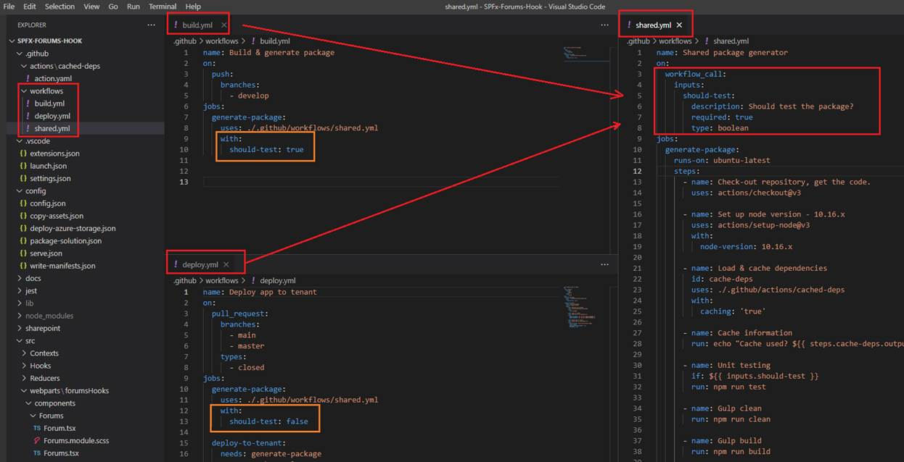
Figure 32
Reusable workflows are YAML-formatted files, very similar to any other workflow file. As with other workflow files, you locate reusable workflows
in the .github/workflows directory of a repository. For a workflow to be reusable, the values for on must include workflow_call We can define inputs
and secrets, which can be passed from the caller workflow and then used within the called workflow. You see that we specified should-test input and we pass true
from the build workflow and false from deploy one.
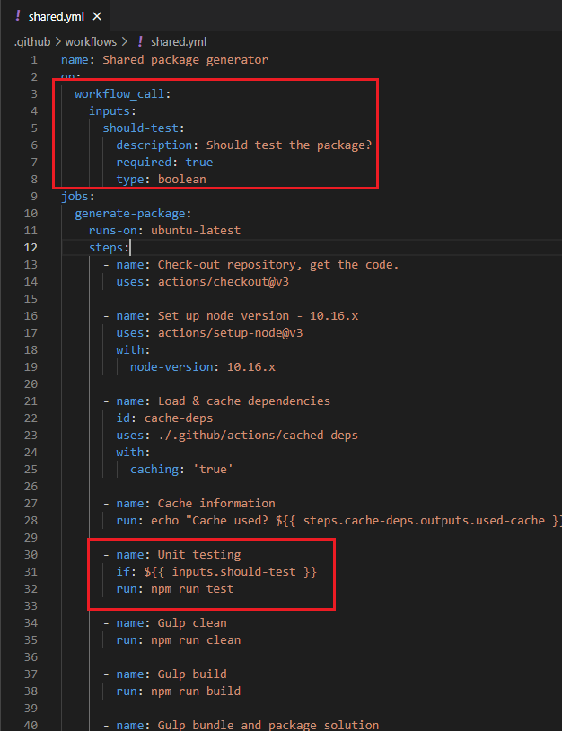
Figure 33
In the reusable workflow we make Unit test conditional. If should-test passed has true value then npm run test will be called, otherwise will not. This means that when deploying the package (with false)
then we actually skip unit testing.

Figure 34
That can be seen visually as well. When build workflow is running then Unit testing step is executed and we see the result.
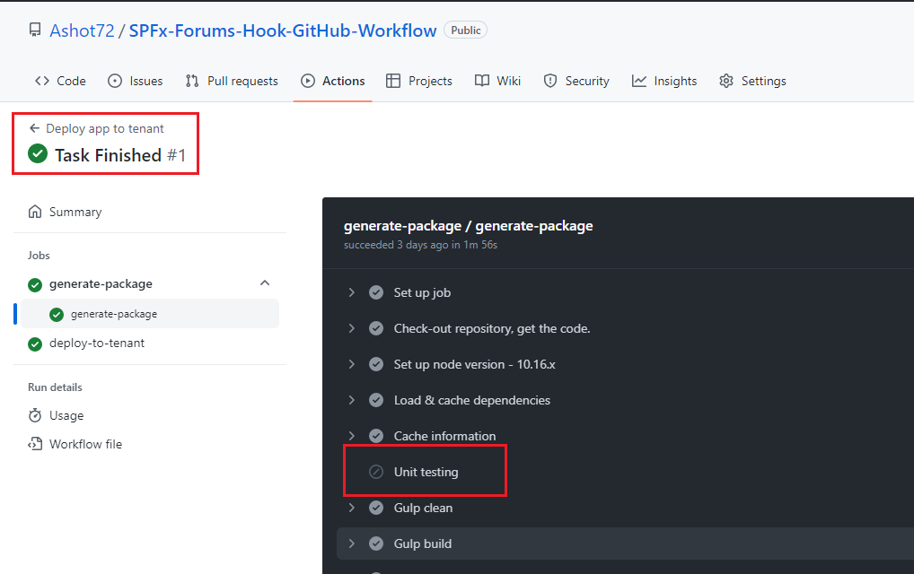
Figure 35
When we build the package in deploy workflow you see we skipped unit testing.
As we mentioned there are tons of actions distributed through a marketplace but sometimes, we need to create our own actions.
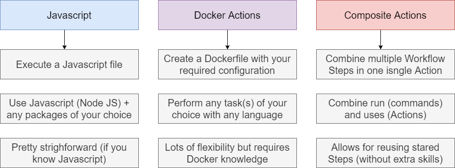
Figure 36
We can create three types of actions. The file name should be either action.yml or action.yaml.
Docker containers allows you to use specific versions of an operating system, dependencies, tools, and code. For actions that must
run in a specific environment configuration, Docker is an ideal option because you can customize the operating system and tools.
Javascript Actions can run directly on a runner machine, and separate the action code from the environment used to run the code.
Using a Javascript action simplifies the action code. To ensure your Javascript actions are compatible with GitHub-hosted runners
(Ubuntu, Windows, macOS) the packaged Javascript code you write should be pure Javascript and not reply on other binaries.
Composite Action allow you to combine multiple workflows steps within one action. For example, you can use this feature to bundle
together multiple run commands into an action, and then have a workflow that executes the bundled commands as a single step
using that action.
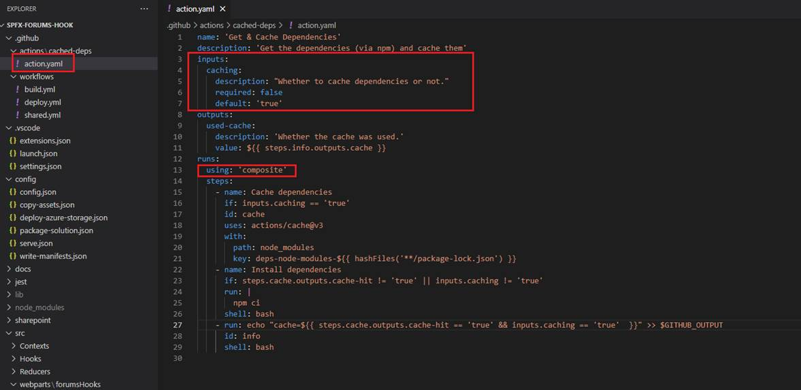
Figure 37
In our project we use Composite custom action. We must use using: 'composite' This composite custom action is meant for getting dependencies and cache them.
It has inputs parameter caching telling it whether cache dependencies or run npm install command each time this custom action is running. It also specifies outputs parameter
which says if it is cached or not. We are caching dependencies to speed up workflows.

Figure 38
To cache dependencies for a job, we use actions/cache action. The action creates and restores a cache identified by a unique key. We create a new cache when packages
in package-lock.json file change, the cache key uses contexts and expressions to generate a key that includes the runner's operating system and SHA-256 hash of the
package-lock.json file. So, when a new package added or updated, we run npm install command and install dependencies.
We can use the output of the cache action to do something based on whether a cache hit or miss occurred. When an exact match is found for a cache for the specified
key, the cache-hit output is set to true. In our custom action we install dependencies if cache-hit is false or we enforce dependency installation with caching inputs setting false.

Figure 39
You can see Caches under Actions tab.

Figure 40
When we run build workflow for the first time you see that there was no caching and run nm ci is called to install dependencies.

Figure 41
Outputs from our custom action is false.
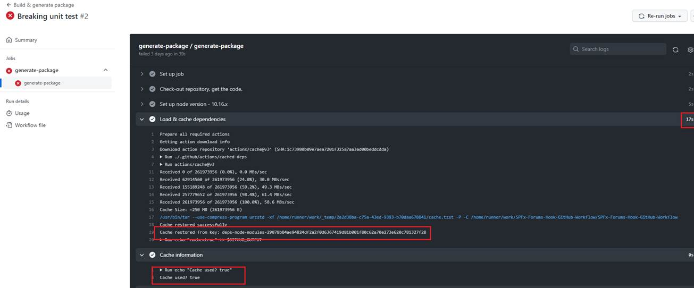
Figure 42
When we run the workflow the second time then it reads form the cache, and Cache used? output is true. In this case the execution time is 17 seconds as compared to the first time (not cached)
when it was 39 seconds.
Composite Actions looks very similar to Reusable Workflows but with reusable workflows you have a very rich log of what is happening, and every single job and step is logged
independently in real time.

Figure 43
This is our reusable shared.yml workflow and you see what is happening, and every single job and step is logged independently in real time.

Figure 44
With composite actions, instead, all you have is a single log of a single step… even if it contains multiple steps. You see that there is no step info such as Cache dependencies and Install dependencies.

Figure 45
We just see npm ci command running in Load & cache dependencies step.

Figure 46
In our build workflow, when we intentionally making the unit test failing, you see that the workflow breaks and stops. Sometimes, we need a workflow to be executed even if a job or step is failing.

Figure 47
Here I created a workflow with 3 steps. On test step we ended it with exit 1.

Figure 48
We see that it breaks and did not reach report step.

Figure 49
We modified the workflow by adding continue-on-error: true in test step which will prevent the workflow form failing when test step is failing.

Figure 50
In this case though we are still getting the error, but report step executed.

Figure 51
In or deploy workflow after generating a package we have to download it to deploy to an organization tenant. You remember we uploaded the package to storage space on
GitHub (Figure 27) with package name. Now, we are downloading the artifact to install it on an organization app catalog.

Figure 52
In order to login to a tenant using CLI for Microsoft 365 we use pnp/action-cli third party action. To authenticate we should pass
admin username and admin password. In GitHub actions encrypted secrets allow you to store sensitive information in your organization, repository
or repository environment. We will use that feature to encrypted our username and password.
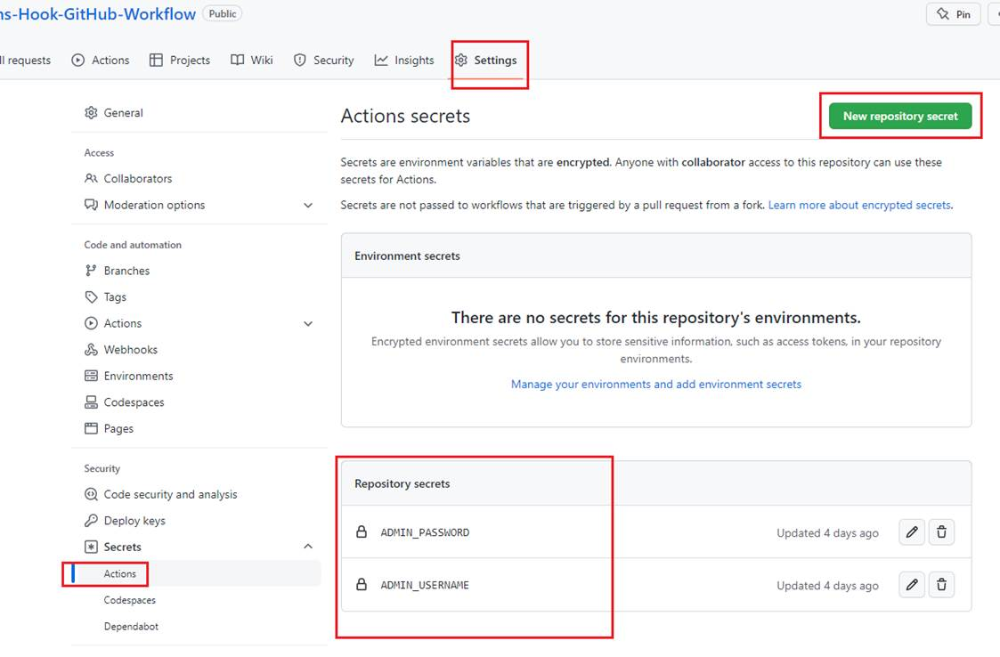
Figure 53
We should select Settings then click on Actions to add New repository secret. You see that I already set ADMIN_USERNAME and ADMIN_PASSWORD secrets.

Figure 54
You set your secret and after saving it you will not be able to see the secret, but you can always re-set it.

Figure 55
I created a workflow to print both admin user name and password encrypted.

Figure 56
It Is not possible to see them as GitHub actions will not allow us to reveal it. It knows that they are coming from secrets and it writes characters *** instead of the actual secret value.
When you run deploy workflow you may not be able login to your organization using pnp/action-cli. Because you may not have an access to PNP Management Shell.

Figure 57
For that reason, an admin has to Connect-PnPOnline and run Register-PnPManagementShellAccess command.
PnP Management Shell only uses delegated permission and is prepared with all the necessary scopes to utilize every cmdlet in PnP PowerShell.
Not all organizations are keen to consent to all of the scopes.

Figure 58
Then you will be presented with a large dialog where you can consent. If you are an admin you can consent for your organization.

Figure 59
After Login to tenant step, we Deploy app to tenant. We use pnp/action-cli-deploy third party action to deploy our app using CLI for Microsoft 365.

Figure 60
We have two options either deploy app at tenant level or deploy app to a site collection. If you App Catalog is a site collection app catalog then you must use
option 2 and if you it is a tenant app catalog you must use option 1. In our case it is option 1.
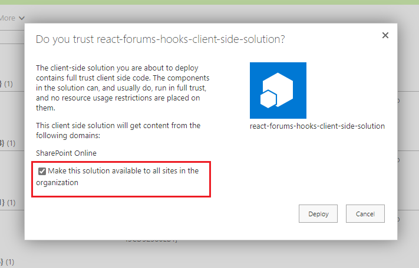
Figure 61
When we deploy a package manually, we can select 'Make this solution available to all sites in the organization' option.

Figure 62
In this case Added to all sites is Yes.

Figure 63
When we deploy it via GitHub actions then the value is No.

Figure 64
In this case we have to add it to the site manually.

Figure 65
Our SPFx Forums Hook Web part running.